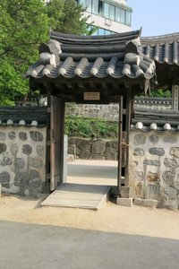

KA MAN TRAVEL
Tokyo Is Gorgeous!

Tokyo is the capital and the largest city of Japan. The city is super busy, and yet very beautiful and clean. The city is full of tall skyscrapers and the people in Tokyo are always in hustle and bustle. The streets are unbelieveable clean all the times. The Japanese food is good and the people there are nice. Tokyo is very fun to visit and you don't want to miss it!
Come see my journey in Tokyo!
Taipei Is Awesome!

Taipei is the capital of Taiwan. It is the cultural, political and economical center of the country. The people in Taipei are very nice and the city is famous for its night markets and these night markets are full of authentic Taiwanese street foods. The food is yummy and the people are great. Taipei is a great city which you want to go visit again!
Come see my journey in Taipei!
Seoul Is Amazing!
Seoul is the capital of South Korea. It is the political and economical hub of the country. The city is full of high skyscrapers and traditional Korean houses. There are a variety choice of food in Seoul, and I love Korean kimchee! The food are very special and the people are helpful. Seoul is a very unique city and I hope I will go there again soon!
Come see my journey in Seoul!
Macau Is Special!

Macau is a special district of China. It has a lot of casinos, and a lot of people from mainland China go to Macau to gamble from dawn to dust. It is a very small city and it was ruled by Portugal previously, so its Portugese dishes are very famous. It is a very special city and you will like to pay a visit there if you have time.
Come see my journey in Macau!